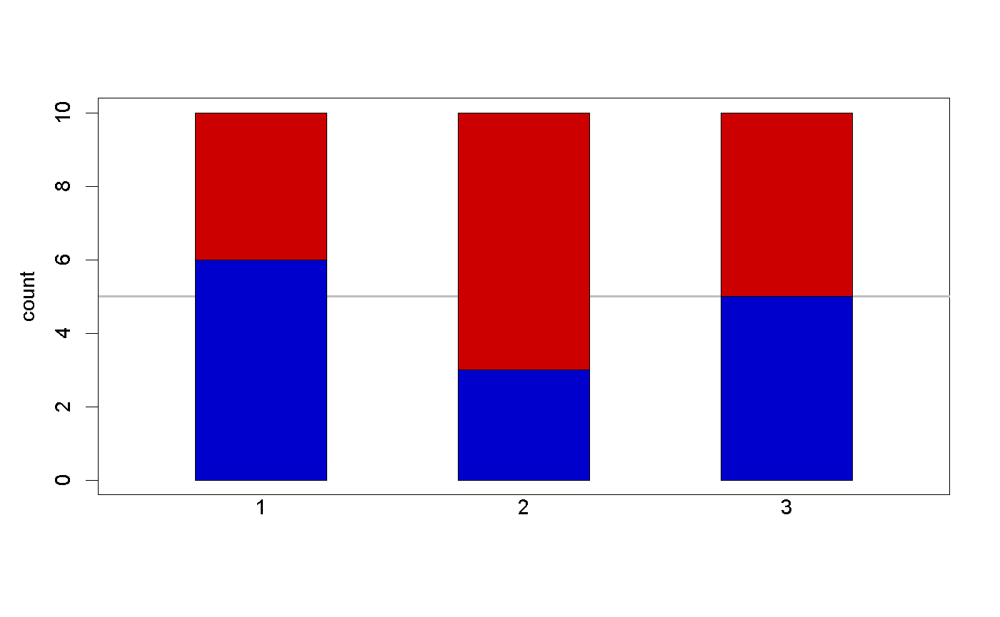
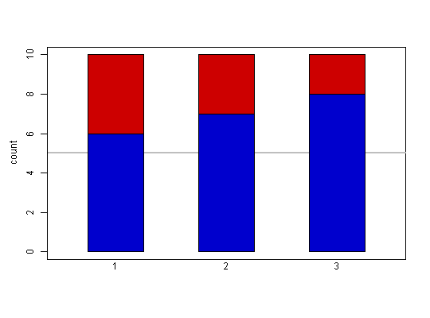
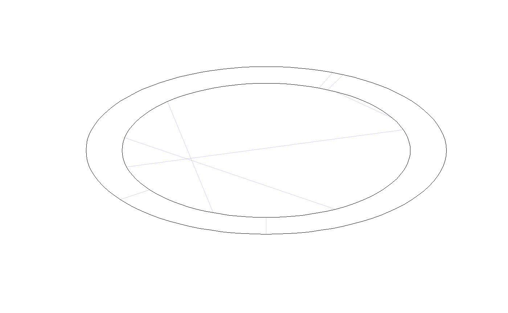
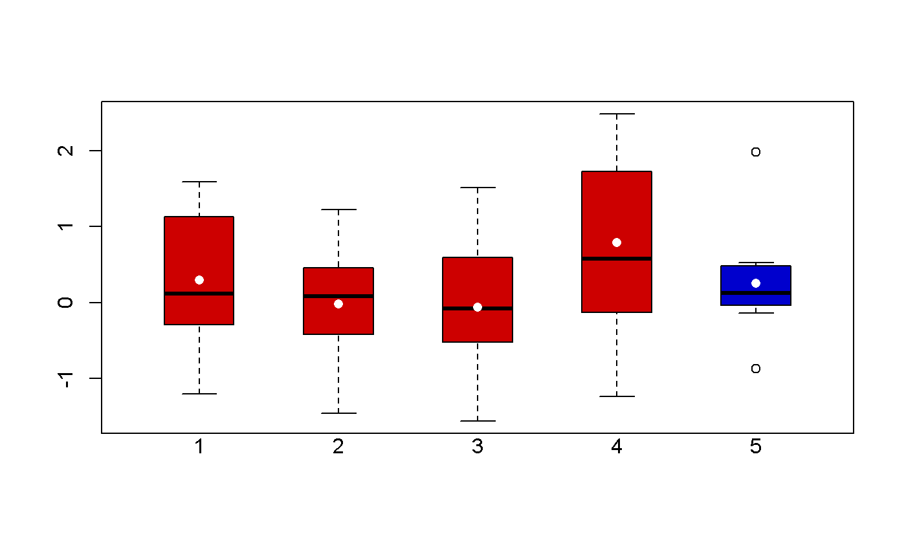
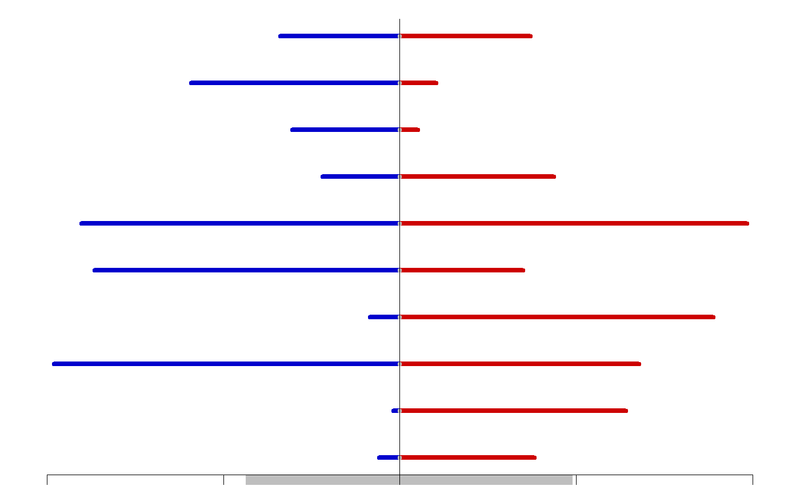
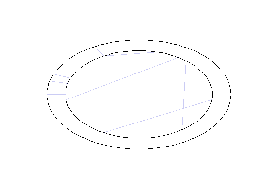

Functions for the palasso manuscript.
plot_score(X, choice = NULL, ylab = "count") plot_table( X, margin = 2, labels = TRUE, colour = TRUE, las = 1, cex = 1, cutoff = NA ) plot_circle(b, w, cutoff = NULL, group = NULL) plot_box( X, choice = NULL, ylab = "", ylim = NULL, zero = FALSE, invert = FALSE ) plot_pairs(x, y = NULL, ...) plot_diff(x, y, prob = 0.95, ylab = "", xlab = "", ...)
| X | matrix with \(n\) rows and \(p\) columns |
|---|---|
| choice | numeric between \(1\) and \(p\) |
| margin | \(0\) (none), \(1\) (rows), or \(2\) (columns) |
| cutoff | numeric between \(0\) and \(1\) |
| b | between-group correlation: vector of length \(p\) |
| w | within-group correlation: matrix with \(p\) rows and \(p\) columns |
| group | vector of length \(p\) |
| x, y | vectors of equal length |
| ... | additional arguments |
| prob | confidence interval: numeric between \(0\) and \(1\) |
to do
The function plot_score compares a selected column to each of the
other columns. It counts the number of rows where the entry in the selected
column is smaller (blue), equal (white), or larger (red).
Use palasso to fit the paired lasso.
### circle ### n <- 50; p <- 25 X <- matrix(rnorm(n*p),nrow=n,ncol=p) Z <- matrix(rnorm(n*p),nrow=n,ncol=p) b <- sapply(seq_len(p),function(i) abs(cor(X[,i],Z[,i]))) w <- pmax(abs(cor(X)),abs(cor(Z)),na.rm=TRUE) palasso:::plot_circle(b,w,cutoff=0)